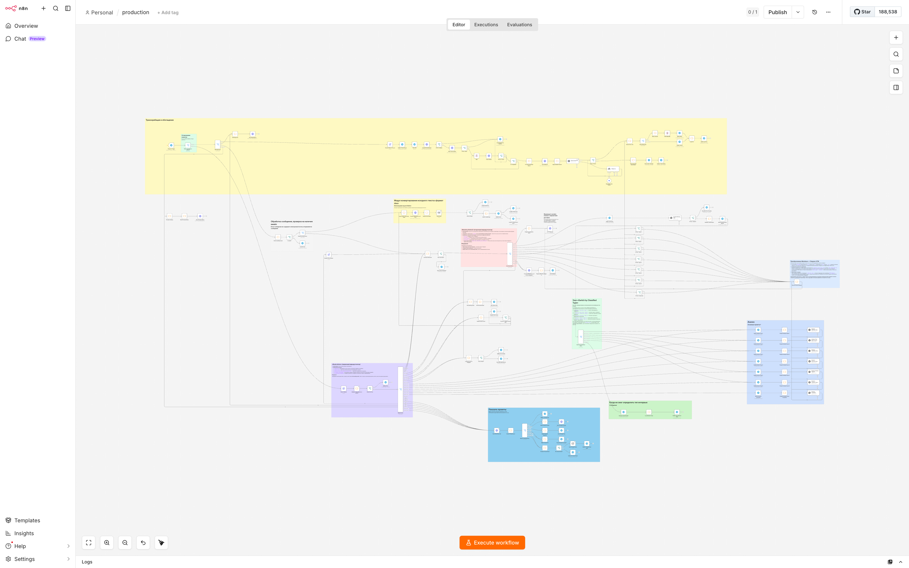

- Роль
- Архитектор и разработчик воркфлоу
- Стадия
- В эксплуатации, развивается
- Размер
- 143 ноды · 181 соединение · 28 ветвлений (20 If + 8 Switch)
- Error-handling
- 31 узел с явной обработкой ошибок
- Стек
- n8n self-hosted · Telegram Bot API · AssemblyAI · OpenAI · DeepSeek · SMTP
- Выдача
- Telegram · DOCX · e-mail · preview
Проблема — записи интервью не превращаются в артефакты сами
У HR и руководителей накапливаются аудиозаписи собеседований, оценочных бесед и интервью разных типов. Ручная расшифровка долгая, шаблоны отчётов исторически разные, а готовые «no-code из шаблона» сборки разваливаются на первой же реальной нагрузке: нет состояний, нет обработки сбоев LLM или транскрипции, нет понятного fallback при отказе провайдера.
Нужна была одна дисциплина: загрузил файл — получил согласованную структуру вывода без переключения между инструментами; пайплайн должен переживать сбои внешних API и оставаться поддерживаемым одним инженером.
Решение — production-воркфлоу с шестью функциональными кластерами
Один workflow «production» в n8n self-hosted, разнесённый на шесть функциональных кластеров: приём, транскрипция, классификация типа интервью, ветки анализаторов, обработка ошибок и выдача. Точка входа — Telegram: пользователь отправляет голосовое или файл, бот извлекает идентификаторы и передаёт в трёхстадийный конвейер AssemblyAI (Upload → Start → Check).
Дальше — LLM-классификация типа встречи и маршрутизация в одну из шести предметных веток анализа (Type 1–6) плюс комплексный и корпоративный сценарии. Каждая ветка — собственный строго структурированный промпт; результат нормализуется под HTML для Telegram, при необходимости режется на части по лимитам мессенджера, конвертируется в DOCX и отправляется по SMTP.

Multi-LLM с fallback — OpenAI и DeepSeek как взаимозаменяемые анализаторы
OpenAI — основной провайдер, DeepSeek Chat — резервный. Переключение между ними реализовано так, чтобы не требовать переписывания воркфлоу: ветка fallback срабатывает при недоступности или ошибке основного провайдера, схема промптов и нормализация ответа общие.
Систематическая обработка ошибок — 31 узел
В пайплайне 31 узел с явной обработкой ошибок. Подход — не «один глобальный catch», а локальные хендлеры по областям:
- Отдельные обработчики для каждой ветки анализаторов (Type 1–6, Complex, Corporate) — со своими стратегиями ретрая и фолбэка.
- По одному хендлеру на каждую из трёх стадий AssemblyAI (Upload / Start / Check) — разные сбои требуют разной реакции.
- Повторные попытки с задержкой и счётчиком, разделение retryable и критических ошибок: временные сбои LLM или сети не «съедают» сессию, критические — поднимаются наверх с понятным сообщением.
Telegram state-machine — состояния диалога без внешнего хранилища
Маршрутизация message vs callback_query разнесена в корне: inline-кнопки не пересекаются с обычными сообщениями. На уровне воркфлоу есть отдельные состояния — «ждём email», «подтверждение отправки», «выбор типа выдачи» (preview / file / DOCX / email), очистка устаревших записей. Это снижает «залипание» сценариев в промышленной эксплуатации.
Каталог промптов с UI прямо в боте
Отдельная ветка воркфлоу реализует каталог промптов: пользователь видит меню → preview содержимого → выбирает способ доставки (как сообщение, как файл или на e-mail). Под капотом — self-fetch воркфлоу, благодаря которому наполнение каталога живёт в одном месте и не дублируется по другим веткам.
Самодиагностика — observability без внешних дашбордов
Отдельная ветка валидации и notify-каскад с диагностическими отчётами в Telegram. Состояние пайплайна, статусы внешних API, последние ошибки и счётчики ретраев видны прямо в чате администратора — без поднятия отдельной Grafana и без внешних дашбордов. Минимально достаточная наблюдаемость для одного инженера сопровождения.
Что демонстрирует этот артефакт
Такой контур масштабируется сменой промптов и подключением корпоративных политик хранения данных без переписывания «с нуля». Шлюз псевдонимизации перед облачной моделью — см. Pseudonymizer MVP — подключается отдельной нодой и закрывает требование ИБ на работу с PII и коммерческой тайной.